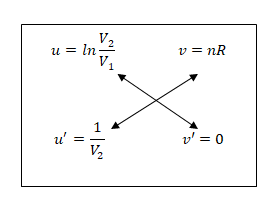

Let:
The differentiation involves finding:
Step 2: Express u and v in Terms of V2
For u = ln
, differentiate with respect to V2:
For v = nR, since nR is a constant:
v' = 0
Step 3: Apply the Crosswise Sutra

Simplify:
Step 4: Result
The derivatived
∆S
dV2
=
nR
V2
shows the rate of change of entropy with respect to the